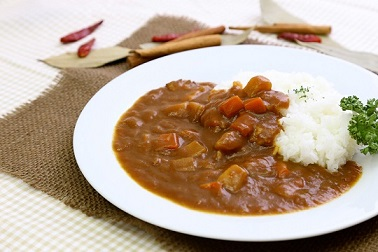

まろやかカレーライス
今日紹介するレシピは、ひと手間加えたまろやかカレーライスです。

材料一覧
4人前
ルー（市販）
1/2箱
じゃがいも
4個
玉ねぎ
2個
ニンジン
2個
鶏肉
250グラム
サラダ油
大1
水
850ml
チョコレート
お好み
作り方
鶏肉、玉ねぎ、じゃがいも、にんじんを1口大に切る。
サラダ油を敷いたフライパンで切った材料を炒める。
水を加えて沸騰したらあくを取り、弱火～中火で約15分煮込む。
いったん火を止め、ルーを割り入れて溶かし、再び弱火でとろみがつくまで約10分煮込む。
ワンポイント
コクを出すために煮込んでいる途中でお好みの量のチョコレートを加え、混ぜながら溶かしましょう。
チョコレートでなくココアや牛乳、ミルキーを入れても美味しく出来上がります。
トプページへ戻る
ページトップへ戻る
 4人前 4人前
4人前 4人前